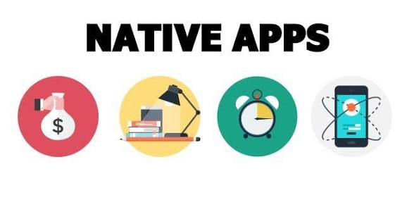

⚙️Aplicaciones Nativas, Híbridas y Multiplataforma
Las aplicaciones pueden clasificarse en varias categorias segun su funcionalidad y tecnologia que utilizan.cada una posee caracreisticas y usos especificos,cosa que es importante conocer para poder diferenciarlas.
-
Nativas: Las aplicaciones nativas se desarrollan especificamente para un sistema operativo,como IOS o oAndroid,siendo su pricipal caracteristica que aprovechan al 100 porciento las capacidades del hardware y software del dispositivo.Esto hace que puedan ofrecer un rendimiento optimo y una mejor experiencia al usuario,requieriendo un desarrollo separado para cada plataforma.Regularmente son Hechas en lenguajes oficiales (Kotlin/Swift).

Ventajas:
- Máximo rendimiento y fluidez (acceso directo a APIs nativas y GPU).
- Mejor integración con hardware y funciones del dispositivo (GPS, cámara, sensores).
- Experiencia de usuario consistente y optimizada para la plataforma.
- Acceso completo a las últimas APIs del sistema operativo y mejor soporte para actualizaciones de UI/UX.
Desventajas:
- Mayor coste de desarrollo y mantenimiento (código separado por plataforma: Java/Kotlin para Android y Swift/Objective-C para iOS).
- Tiempo de desarrollo más largo si se soportan varias plataformas.
- Necesidad de equipos con conocimientos específicos de cada plataforma.
Ejemplos:
- Instagram (componentes nativos para rendimiento y multimedia).
- WhatsApp (uso intensivo de APIs nativas y optimizaciones específicas).
Multiplataforma (Flutter, RN, MAUI): Estas son aplicaciones diseñadas para funcionar en multiples sistemas operativos, tales como Android,iOS,windows o macOS,asi como en distintos dispositivos como tablets,telefonos o computadoras de escritorio.Estas regularmente ahorran costos y tiempo al usar un solo codigo base,permitiendo asi una experiencia de usuario mas consistente.
Ventajas:
- Desarrollo más rápido si ya existe una web (HTML/CSS/JS reutilizable dentro de un contenedor como WebView).
- Costes iniciales más bajos y ciclo de publicación único por código base web.
- Fácil iteración y despliegue de cambios en la parte web (dependiendo de la arquitectura).
Desventajas:
- Rendimiento inferior frente a nativas en operaciones intensivas (animaciones complejas, procesamiento multimedia).
- Limitaciones en la experiencia de usuario y en el acceso a APIs nativas; a veces se requieren plugins o puentes.
- Dependencia del contenedor (WebView) que puede comportarse distinto por plataforma y versión.
Ejemplos:
- Twitter Lite (versión web progresiva dentro de un contenedor en algunos casos).
- Early versions of Spotify (usaban WebView en algunas partes, aunque hoy muchos servicios han migrado).
Híbridas: Estas son apps creadas a partir de tecnologias web (HTML,CSS,JavaScript) y luego "envueltas" en un contenedor nativo,lo que permite que puedan ser usadas en multiples plataformas tales como iOS o Android.Con un solo codigo base,combinan lo mejor de las apps nativas(acceso a funciones del dispositivo) y web(desarrollo multiplataforma bueno,bonito y barato).Sin embargo pueden ser un poco menos rapidas que las puramente nativas.
Apps Multiplataforma Un solo código
Ventajas:
- Un único código base para iOS y Android (mejora la productividad y reduce costes de mantenimiento).
- Rápida entrega de nuevas funcionalidades y coherencia entre plataformas.
- Gran ecosistema de librerías y componentes listos para usar (dependiendo del framework: Flutter, React Native, etc.).
Desventajas:
- Puede haber diferencias sutiles entre plataformas que requieren código específico o «puentes» nativos.
- Rendimiento muy bueno en muchos casos, pero ciertas operaciones nativas muy pesadas pueden necesitar módulos nativos.
- Dependencia del framework y su madurez; cambios importantes en el framework pueden requerir actualizaciones.
Ejemplos:
- Facebook Ads Manager (originalmente construida con React Native en parte de la app).
- Google Ads (utiliza tecnologías multiplataforma en ciertas secciones; muchas grandes empresas usan Flutter/React Native según el caso).